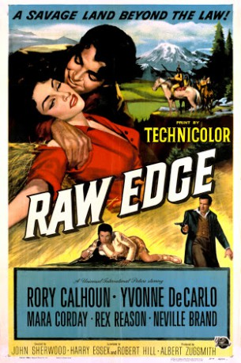
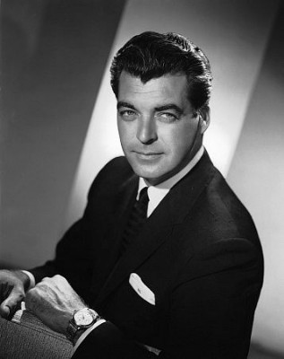
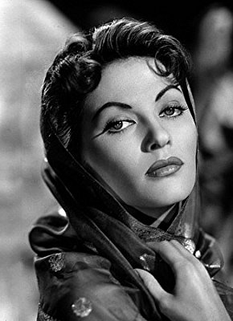

#7351 Die Meute lauert überall
Alternativ: Raw Edge
 
 IMDB-Wertung: 6.3 / 10
IMDB-Wertung: 6.3 / 10  Metascore: 0
Metascore: 0 
In the lawless Oregon country of 1842, local magnate Gerald Montgomery decrees that any unattached woman belongs to the first taker. Dan Kirby is lynched, starting a stampede to claim his half-Indian wife Paca. Trouble starts with the local tribe, but worse is in store when Dan's tough brother Tex rides in. The zeal of Montgomery's men to protect him from Tex is tempered by their lust for Hannah, who'd be his widow.
Jahr: 1956
Dauer: 76 Minuten
FSK: 12
Land: USA Studio: Universal PicturesTonspuren:
Untertitel:
Auflösung: 1080p (1920x960) Größe: 6717 MB
Genre: Western, Liebe
Regisseur: John Sherwood
Drehbuch: Harry Essex
Soundtrack:
Darsteller:
-  Rory Calhoun als Tex Kirby
-  Yvonne De Carlo als Hannah Montgomery
 Mara Corday als Paca
Mara Corday als Paca Neville Brand als Tarp Penny
Neville Brand als Tarp Penny- Rex Reason als John Randolph
 Emile Meyer als Pop Penny
Emile Meyer als Pop Penny- Herbert Rudley als Gerald Montgomery
 Robert J. Wilke als Sile Doty
Robert J. Wilke als Sile Doty John Gavin als Dan Kirby
John Gavin als Dan Kirby Gregg Barton als McKay
Gregg Barton als McKay- Ed Fury als Whitey
 William Schallert als Missionary
William Schallert als Missionary Bob Hoy als Five Crows , uncredited
Bob Hoy als Five Crows , uncredited Jack Kenny als Townsman , uncredited
Jack Kenny als Townsman , uncredited Paul Kruger als Townsman , uncredited
Paul Kruger als Townsman , uncredited Francis McDonald als Chief Kiyuva , uncredited
Francis McDonald als Chief Kiyuva , uncredited Charles Soldani als Indian , uncredited
Charles Soldani als Indian , uncredited Henry Wills als Townsman , uncredited
Henry Wills als Townsman , uncredited- Beulah Archuletta als Indian Woman , uncredited
- Emile Avery als Montgomery Rider , uncredited
- Gertrude Chorre als Indian , uncredited
- Paul Fierro als Frenchie the Bartender , uncredited
- Richard James als Clerk , uncredited
- Julia Montoya als Indian Squaw , uncredited
- Tony Urchel als Indian , uncredited
Datei: X:\HD-Western-1900-1959\Meute lauert überall, Die (1956, FSK12, 1920x960).mkv seit 19.10.2017
Festplatte: HD Eastern+Western
 Es gibt insgesamt 98 Filme in der Gruppe 'HD-Western-1900-1959'
Es gibt insgesamt 98 Filme in der Gruppe 'HD-Western-1900-1959'